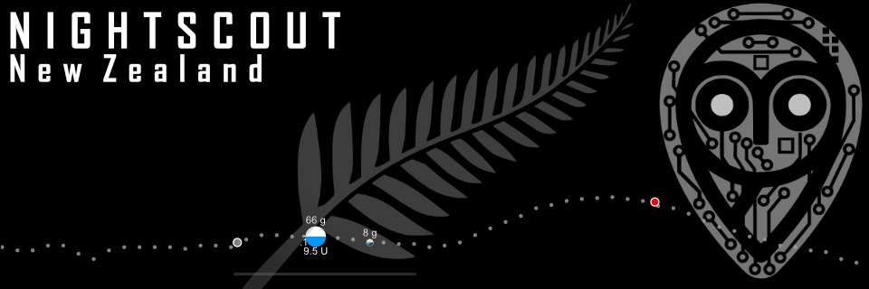

Intro
Diabetes technologies have rapidly developed in recent years, yet New Zealand’s health care system has been slow to fund diabetes technologies and NZ vendors sell many of these technologies to patients at prices far in excess of vendors in comparable countries such as Australia.
Thus, relatively few New Zealanders with T1D are currently able to benefit from technologies such as continuous glucose monitoring and artificial pancreas systems. Nightscout New Zealand advocates for life-changing technologies being made available to New Zealanders living with type one diabetes as quickly as possible.
In particular, Nightscout New Zealand recognizes the benefits that are offered by the innovations made by the #WeAreNotWaiting movement, which have made open-source software innovations freely available people living with type one diabetes.
This includes the Nightscout project, a cloud-based system for viewing CGM data remotely in real time, CGM apps such as Xdrip+ and Spike, third party NFC-Bluetooth converters that turn a Freestyle Libre into a CGM, and the Do-It-Yourself (DIY) Artificial Pancreas Systems (APS), OpenAPS, Loop, and AndroidAPS.
Links to these DIY technologies are below:
Loop Docs
OpenAPS
AndroidAPS
The Nightscout Foundation
The Spike App
The xDrip Plus App
The MaioMaio Device
The Blucon Device